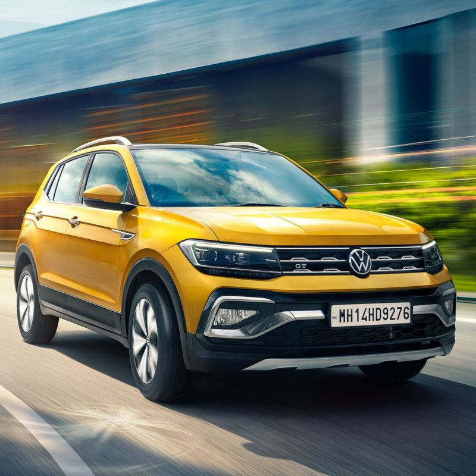

De beste auto markt

Op dit moment verkopen wij deze auto in meerdere kleuren
keuzes: geel, blauw, grijs
De geschiedenis van Volkswagen:
De Oostenrijkse professor en auto-ingenieur Ferdinand Porsche en de Joodse ingenieur Josef Ganz stonden aan de wieg van Volkswagen. Porsche had in 1922 vergeefs plannen voor een goedkope auto voorgesteld. Er was zelfs bij zijn toenmalige werkgever Austro-Daimler geen interesse. Mercedes-Benz zag evenmin iets in Porsches droom van een goedkope auto. Porsche probeerde het bij onder meer NSU en Zündapp, waar een aantal prototypes werden gerealiseerd. Hij begon voor zichzelf, en kreeg in 1934 van Adolf Hitler de opdracht een "Kraft durch Freude"-wagen te ontwerpen, een wagen voor het volk. Het programma van eisen voor deze auto was fors. De KdF-wagen moest een topsnelheid van 100 km/u kunnen halen; moest twee volwassenen en een kind kunnen vervoeren, of drie soldaten en een mitrailleur; moest een luchtgekoelde motor hebben, zodat hij 's winters buiten kon staan; mocht maximaal tussen de 6 en 7 liter benzine per 100 kilometer verbruiken; en mocht niet meer kosten dan 900 Reichsmark. Het ontwerp voor zo'n auto had Porsche al eerder gereed. In 1932 had hij een vierpersoons auto ontworpen die sterk door ontwerpen van Béla Barényi en een prototype van Tatra-ontwerper Hans Ledwinka was geïnspireerd, met een luchtgekoelde viercilindermotor achterin. Er waren toen drie prototypen van gebouwd door Zündapp. Ook NSU was in het model geïnteresseerd, maar toen dit bedrijf werd overgenomen door Fiat, was dit het einde van de NSU-Volksauto. Het aanbod van Hitler kwam net op tijd. Op 12 oktober 1936 stelde Porsche drie rijdende prototypes voor, die al de karakteristieke vorm van de latere Volkswagen Kever hadden. Iedere wagen legde in zeventig dagen een afstand af van 50.000 km, zonder dat al te grote reparaties nodig waren. Hitler zocht vervolgens persoonlijk een geschikte locatie voor de fabriek. Omdat de enige twee beschikbare autofabrieken - die van Opel en van Ford - niet volledig Duits waren, gaf Hitler zijn "Arbeitsfront" opdracht in het midden van Duitsland, bij Fallersleben, een fabriek te bouwen. Het Duitse volk zou door middel van een spaarsysteem het geld voor de productie bijeen brengen. Er zou een nieuwe stad verrijzen voor de arbeiders van de fabriek en hun gezinnen, Stadt des KdF-Wagens bei Fallersleben (kortweg KdF-stadt, na de Tweede Wereldoorlog Wolfsburg) genaamd, met een residentie voor Hitler, en een boulevard waar na afloop van de oorlog de overwinningsparade zou worden gehouden.